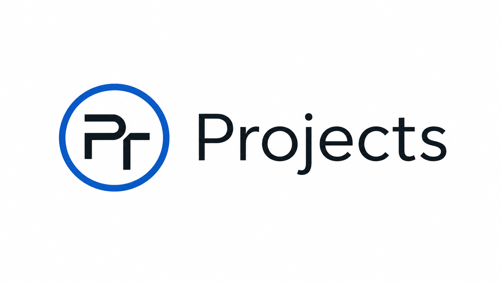

O mnie
Kilka słów o mnie, moich zainteresowaniach i podejściu do technologii, która ma pomagać, a nie przeszkadzać.

trochę projektów, coś o dostępności i nieco moich dźwięków
Różnie bywa. To ja, nazywany różnie przez różnych ludzi. Fajnie, że tu jesteś.
Zbieram tu projekty, krótkie teksty, rzeczy o dostępności i trochę dźwięku. Bez udawania większego portalu i bez ozdobników ważniejszych od treści.
Kilka słów o mnie, moich zainteresowaniach i podejściu do technologii, która ma pomagać, a nie przeszkadzać.
Rzeczy, które tworzę, testuję albo rozwijam: wtyczki i programy mające służyć osobom niewidomym i słabowidzącym. Bez fajerwerków graficznych, skupione przede wszystkim na dostępności.
Krótkie teksty o dostępności, technologii i codziennym korzystaniu z narzędzi.
Miejsce na projekty muzyczne, kompozycje, szkice i rzeczy związane z dźwiękiem.
Od początku zależy mi na tym, żeby tę stronę dało się wygodnie czytać z klawiatury i przy pomocy czytnika ekranu. Struktura ma być przewidywalna, linki zrozumiałe, a treść łatwa do odnalezienia.